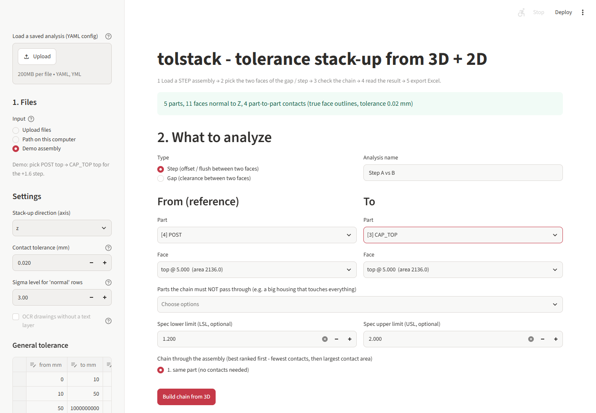
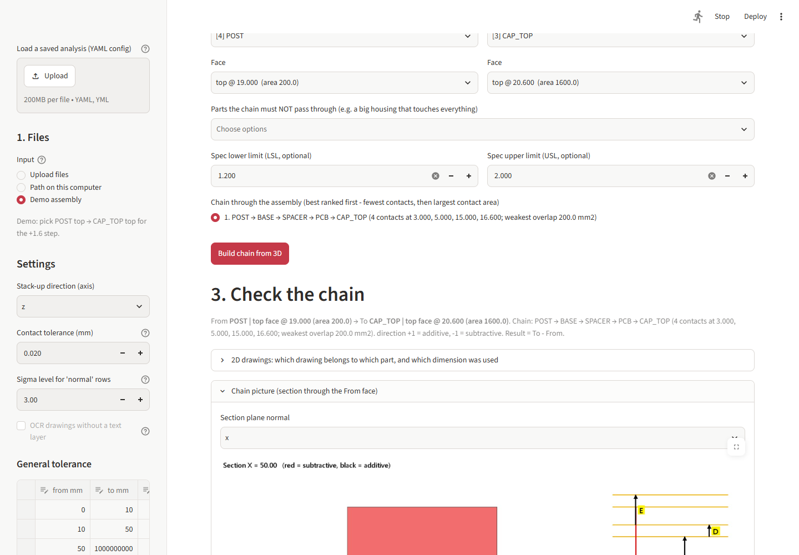
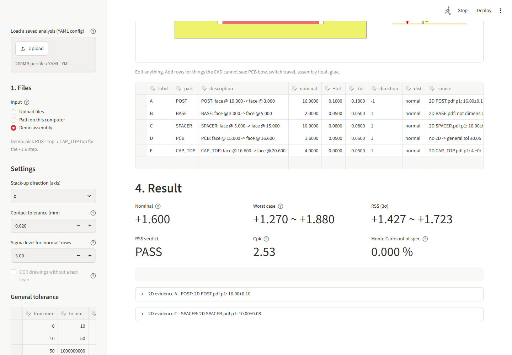

tolstack — tolerance stack-up from 3D + 2D, straight to Excel
Pick a gap or step between two faces of a STEP assembly. tolstack finds the chain of parts
in between, reads the tolerances from your 2D drawings (or the general-tolerance table), and gives
you worst case, RSS, Cp/Cpk and Monte Carlo results in an Excel file with live formulas, a colour
section picture, the 2D evidence and a reviewer sign-off block.
| pick the faces and the chain | check the chain (with section picture) | result |
|---|---|---|
 |
 |
 |
Try it in one command: python -m tolstack demo tolstack_demo --run (writes a demo STEP, 2D PDFs, a config and the Excel report).
What it does
- Reads the STEP assembly: every part, its name and its planar faces along the stack-up axis (X/Y/Z).
- Finds contacts: a top face of one part and a bottom face of another at the same height (within
the contact tolerance, default 0.02 mm) whose real face outlines overlap — holes and L-shapes
included, so two parts whose bounding boxes overlap but whose material does not touch are not linked. - Lists the possible chains from your From face to your To face, ranked: fewest contacts first,
then the largest weakest contact area. You see every candidate and pick the one that matches how the
parts are really held. Each part contributes the distance between the two faces it uses. The chain is
always checked against the 3D (sum of rows = To − From); a chain that does not close is refused. - Finds tolerances:
- The 2D PDF whose file name matches the part name (or the one you assign) is searched for that
dimension:62.73±0.1,2 +0/-0.05, upper- or lower-only4 +0.1/0/4 0/-0.05, limit dimensions
12.10/12.00or5.95~6.05.
All candidates are ranked and shown; you can pick another one. The used one is cropped with a red box as evidence. - Title-block notes ("TOLERANCES UNLESS SPECIFIED …") are never mistaken for a dimension.
- If the 3D nominal differs from the drawing nominal, the drawing limits are kept and the difference is noted.
- Drawings without a text layer (text exported as lines) are flagged; with Tesseract installed they can be OCR'd.
- Otherwise the general tolerance of that part's drawing applies: a size table under "TOLERANCES UNLESS
OTHERWISE SPECIFIED" / "未注公差", one ± value, ISO 2768 / JIS B 0405 / GB/T 1804 class f, m, c or v,
or a decimal-places rule (X.XX ±0.05). The source column names the drawing and the kind of note. - Without a drawing, without a note, or for a size the note does not cover, the app's general tolerance
table applies (editable; default 0–10 ±0.05, 10–50 ±0.10, >50 ±0.15). Following the drawing can be switched off. - GD&T callouts (flatness, parallelism, profile, position …) found on the drawings are listed. They
are not in the stack unless you add one as a row (zone of total width t → nominal 0, ± t/2).
- The 2D PDF whose file name matches the part name (or the one you assign) is searched for that
- Analyzes: nominal, mean shift for asymmetric tolerances, worst case, RSS, Cp, Cpk, predicted ppm and yield,
contribution %, a sensitivity table (which tolerance to tighten first) and a Monte Carlo % out of spec. Each row can benormal(±3σ by default),uniform
ortriangular. - Writes Excel: inputs in yellow, everything else a formula (edit a tolerance or a distribution and the
whole stack, Cp/Cpk and verdicts recalculate), PASS/FAIL, contribution chart, section picture,
"2D references" sheet, "Sensitivity" sheet, "Assumptions" sheet (method, chain used, other chains found, general table) and a
Prepared / Checked / Approved block. Prints landscape on one page width.
You stay in control: the chain is an editable table, so you can change values, flip a direction, or add
rows the CAD cannot see, such as PCB bow, switch travel, assembly float or glue thickness.
Without a STEP file, and after the stack-up
Some stacks are not a chain of flat faces: the radial squeeze of a seal ring, a pin in a hole, a fit
between two diameters. For those, write the rows yourself in a config (rows) and run it the same way:
- Hand-written rows. Only
labelandnominalare needed. A row without a tolerance is looked up like
any other row: the 2D drawing of itspart, then the general tolerance - and the source column says which. - Diameter rows. A size given as a diameter on the drawing but used on one side (radial) is written as
the diameter withdiameter: true. The tolerance is looked up at the diameter, then size and tolerance are halved. - A locating fit (pilot / spigot, pin / hole) is two rows with opposite directions. With equal nominals
they cancel in the result and only add their tolerance - the usual contributor that is missing from a first stack. - Finding the locating fits in the CAD:
tolstack fits model.step PART_A PART_Blooks for coaxial bore / shaft
pairs and facing side walls between two parts across the stack axis, and reports the clearance on each side and
the total float per direction.--rowsprints the fits as two rows each (diameter: true, so the one-side
float is (slot - tongue) / 2), ready to paste underrowsorextra. - Measured parts (
measured): groups of readings, such as failed and good units, are placed against the
RSS and worst-case range: inside or outside, and how many readings are beyond the limit. - A limit (
limit): the result that still works, typed in or fitted from test points (x = the stack
result, y = what the test measured; straight line by least squares, limit = x where the line crossesy_limit).
The report gives the RSS and worst-case margin to the limit and the predicted % of assemblies beyond it. - Pictures (
pictures: true):<output>_chart.png(ranges, limit, measured groups, contribution) and
<output>_table.png(the stack table and the result), sized for a mail or a slide.
The Excel file gets a Measured sheet (live: it reads the stack from the Stack-up sheet, the readings and the
fit points are inputs, the limit is SLOPE / INTERCEPT) and a Chart sheet. Try it:
python -m tolstack run examples/seal_squeeze_config.yaml, or in the web app choose Rows by hand (no STEP)
and Fill in the example.
Install
git clone https://github.com/juw12/tolstack.git
cd tolstack
pip install -e ".[app]" # or: pip install -r requirements.txtWindows, no command line: double-click start.bat. It creates .venv, installs tolstack and opens the app.
Docker:
docker build -t tolstack .
docker run --rm -p 8501:8501 tolstack # then open http://localhost:8501Python 3.10–3.13. Works on Windows, macOS and Linux. Optional: Tesseract
for OCR of drawings without a text layer.
Use it
Web app
streamlit run app.py- Sidebar: Demo assembly (to try it), upload the STEP and 2D PDFs - as loose files, a whole folder or one
zip / 7z, up to 2 GB per file on a PC (on the shared server the limit follows its memory, about 110 MB of
STEP in a 1 GiB pod) - or type the path to a STEP, a folder, a zip or a 7z on this computer.
Pointed at a project hand-over folder (16 ... 3D), tolstack also looks inside its zip / 7z files, drops
repeated copies of the same STEP, offers the newest full assembly first, and takes the drawings from the
17 ... 2Dfolder next to it.
Native Creo / Pro-E files (.prt.N,.asm.N): on a PC with Creo Parametric installed, the folder's
assemblies are listed and Convert with Creo has Creo save the chosen one as STEP in the background
(files are copied to a private folder first; yours is not changed). SetTOLSTACK_CREOtoparametric.exe
if Creo is not underPTC\Creo *. Creo needs a working license (a refusal by the license server is shown
as such) and can not open files saved by a newer Creo (each file's release is checked first). tolstack does not decode Creo files itself - their geometry format is PTC's own.
A saved YAML config can be loaded at the top of the sidebar to restore an analysis. - Choose Step or Gap, then the From part + face and the To part + face; set LSL/USL (optional).
The 3D view next to the lists highlights the picked parts and faces and follows every change (toggle it off
for a very large assembly). Faces are picked in the lists, not by clicking in the view. - Pick the chain from the ranked list (and exclude parts that must not be in it), then Build chain from 3D.
A section picture of the chain appears right away. - Check the table. Open "2D drawings" to assign a drawing to a part or choose another dimension candidate.
- Read the result (nominal, WC, RSS, verdict, Cpk, Monte Carlo), then Create Excel.
Download this analysis as a config saves a portable YAML: it names the STEP and the drawings
(drawings/) instead of a path on one computer, so it runs from any folder that holds those files. - Optional: "GD&T on the drawings" adds a callout as a row; "Sensitivity" shows what each row does to the result.
Rows by hand (no STEP) in the sidebar opens a table for a stack written by hand: label, part, nominal,
tolerances, direction, diameter and distribution per row, LSL / USL, and (optional) measured groups and a
functional limit - typed in or fitted from test points. Calculate gives the same result, Excel and pictures
as tolstack run; the analysis downloads as a config. A saved config with rows loads straight into this page.
Each browser session works in its own folder on the server; folders idle for a day are removed.
Command line / batch
python -m tolstack demo examples/demo --run # demo STEP + 2D PDFs + config -> Excel
python -m tolstack faces examples/demo/demo_assembly.step --axis z # parts, faces, contact count
python -m tolstack paths examples/demo_config.yaml # candidate chains
python -m tolstack run examples/demo_config.yaml # -> examples/out/demo_ta.xlsx
python -m tolstack run examples/seal_squeeze_config.yaml # hand-written rows, no STEP -> Excel + 2 PNG
python -m tolstack fits model.step COVER FRAME --rows # locating fits between two parts -> rowsAfter pip install -e . the same commands work as tolstack demo|faces|paths|fits|run.
Config file (version 1)
| key | meaning |
|---|---|
version |
config schema version, 1 |
step, axis |
STEP file (relative to the config) and stack-up axis x/y/z |
from, to |
{part, face: top/bottom, level}; result = to − from |
exclude |
parts the chain must not pass through |
chain_option |
which ranked chain to use (1 = best), see tolstack paths |
contact_tol |
faces closer than this (mm) count as touching |
spec |
{lsl, usl} |
drawings, drawing_map, ocr |
PDF globs; {PART: file.pdf} overrides ('' = no drawing); OCR on/off |
general_tolerance |
[[from, to, ±tol], ...] - the app table |
general_from_drawing |
true (default): use the general-tolerance note of each part's drawing before the table |
sigma_level, mc_samples |
tolerance = ±k σ for normal rows; Monte Carlo sample count |
extra |
rows that are not part thickness (bow, travel, float …); same keys as rows |
rows |
a stack written by hand, instead of step / from / to: {label, nominal} plus optional part, description, tol_plus, tol_minus, direction (+1 / -1), dist, source, diameter |
diameter (in a row) |
true: nominal and tolerance are written as a diameter and halved for a one-side stack |
measured |
groups of measured results: [{name, values: [...]}] or [{name, min, max}], optional result text |
limit |
{value} or a fit {x: [...], y: [...], y_limit}; optional side (lower default / upper) and label |
pictures |
true: also write <output>_chart.png and <output>_table.png |
overrides |
per row label, e.g. {B: {tol_plus: 0.03, tol_minus: 0.03, dist: uniform, source: "CPK data"}} |
section, output, title, project, name, type, author |
report options |
Unknown keys are rejected, so a typo cannot silently change a result. See examples/demo_config.yaml
and examples/seal_squeeze_config.yaml.
Limits (read before trusting a result)
- 1-D stack-ups only, along one axis. No angles, no 3D variation. GD&T is read from the drawing text and
listed; it enters the stack only when you add a callout as a row, and only as a simple ± t/2 zone
(no datum shift, no material-condition bonus). The GDT symbol-font mapping is not yet proven on many real drawings. - The STEP unit check only warns. Geometry is always handled in mm; check one known dimension when warned.
- A tolerance stacked on two text lines in the PDF (upper over lower) is not merged; pick the value by hand.
- Contacts are planar faces normal to the axis. Screws, snaps, springs, cylindrical seats and switch
actuation points are not contacts in the CAD; add them as extra rows. - 2D lookup needs PDFs with a text layer (or Tesseract for OCR). Check the source column and the 2D evidence sheet.
- The general-tolerance note is found by pattern matching and is tested on synthetic drawings only. Check the
source column. The decimal-places rule needs the dimension to be found on the drawing; ISO 2768 has no value
below 0.5 mm, so such sizes use the app table. - A dimension that is not on the 2D is taken from the 3D with the general tolerance. That is common
practice, but it is still an assumption, and the report says so in the source column. - Cp/Cpk and ppm assume the sum is normally distributed; Monte Carlo uses the per-row distributions.
- Hand-written rows are not checked against any 3D. The signs and the list of rows are yours; a missing
contributor (a locating fit, a float) makes the range too narrow. tolstack fitsreads axis-aligned geometry only: cylinders whose axis runs along the stack axis and walls
whose normal is X, Y or Z. Two walls overlap when their bounding boxes do, so an L-shaped or holed face can be
listed although the walls do not really face each other - check it in a section. Drafted (tapered) walls are
not planar-normal to X / Y and are not found. The direction of the two rows depends on your stack: check it.- A fitted limit is a straight line through your test points. Read R² on the Measured sheet, and do not use the
limit outside the tested range. The % beyond the limit assumes a normal sum, like ppm. - Results are an engineering estimate. They do not replace a formal tolerance analysis or measured data (FAI/CPK).
Development
pip install -e ".[app,dev]"
pytest -q
ruff check .
mypySee CONTRIBUTING.md for the code layout and the rules for changes, and CHANGELOG.md for what changed.
MIT licence.